신재생에너지발전설비기사(구) (2019-09-21 기출문제)
1과목: 임의 구분
1. 태양광발전 모듈과 인버터가 통합된 형태로서 태양광발전시스템 확장이 유리한 인버터 운전 방식은?
- 모듈 인버터 방식
- 스트링 인버터 방식
- 병렬운전 인버터 방식
- 중앙 집중형 인버터 방식
(정답률: 80%)

2. 태양광발전시스템용 인버터의 단독운전 방지 기능에서 능동적인 검출 방식이 아닌 것은?
- 주파수 시프트 방식
- 유효전력 변동 방식
- 무효전력 변동 방식
- 전압위상 도약 검출 방식
(정답률: 73%)
3. 전원으로부터 부하로 전력이 공급될 때, 최대 전력 전달이 가능하기 위한 전원의 내부저항과 부하저항의 크기 관계는?
- 관계없음
- 내부저항 ＞ 부하저항
- 내부저항 ＜ 부하저항
- 내부저항 = 부하저항
(정답률: 68%)
4. STC 조건에서 측정한 어떤 태양광발전모듈의 최대출력이 100W라면, 태양광발전 전지 온도가 45℃ 일 때 태양광발전 모듈의 최대출력(W)은? (단, 태양광발전 전지의 온도 보정계수(α)는 –⑤ %/℃ 이다.)
- 90
- 95
- 100
- 110
(정답률: 50%)
5. 전기를 생산하는 발전에는 여러 방식이 있고, 각각의 에너지 변환효율은 다르다. 다음 설명 중 가장 옳은 것은?
- 수력발전이 화력발전보다 효율이 높다.
- 풍력발전이 화력발전보다 효율이 높다.
- 지열발전이 태양광발전보다 효율이 높다.
- 바이오에너지발전이 원자력발전보다 효율이 높다.
(정답률: 62%)
6. 전력변환장치(PCS)의 기능으로 옳은 것은?
- 단독운전기능, 수동전압 조정기능, 직류지락 검출기능
- 단독운전기능, 최대전력 추종제어기능, 직류 검출기능
- 단독운전 방지기능, 최대전력 추종제어기능, 직류운전기능
- 자동운전 정지기능, 최대전력 추종제어기능, 단독운전 방지기능
(정답률: 72%)
7. 건물에 설치된 태양광발전시스템의 낙뢰 및 과전압 보호로 고려해야 하는 방법이 아닌 것은?
- 교류측에 과전압 보호장치를 설치해야 한다.
- 태양광발전시스템 접속함의 직류측에 서지 보호장치를 설치해야 한다.
- 태양광발전시스템이 외부에 노출되어 있다면 적절한 피뢰침을 설치해야 한다.
- 낙뢰 보호시스템이 있어도 반드시 태양광발전시스템을 접지 및 등전위면에 연결해야 한다.
(정답률: 66%)
8. PN 접합 다이오드에 순방향 바이어스 전압을 인가할 때의 설명으로 옳은 것은?
- 커패시턴스가 커진다.
- 내부전계가 강해진다.
- 전위장벽이 높아진다.
- 공간전하 영역의 폭이 넓어진다.
(정답률: 58%)
9. 태양광발전 모듈의 지락에 대한 안전대책이 가장 필요한 인버터 회로방식은?
- 부하변동 방식
- 트랜스리스 방식
- 고주파 변압기 절연 방식
- 상용주파 변압기 절연 방식
(정답률: 46%)
10. 동일 출력전류(I) 특성을 가지는 N개의 태양광발전 전지를 같은 일사 조건에서 서로 병렬로 연결했을 경우 출력전류 Ia에 대한 계산식은?
- Ia = N × I
- Ia = N2 × I
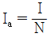
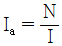
(정답률: 76%)
11. 동일한 태양광발전 모듈에서 개방전압이 가장 높을 것으로 예상되는 상태는?
- 외기 온도가 0℃이고 일사량이 1000 W/m2 일 때
- 외기 온도가 10℃이고 일사량이 600 W/m2 일 때
- 외기 온도가 30℃이고 일사량이 800 W/m2 일 때
- 외기 온도가 -10℃이고 일사량이 1000 W/m2 일 때
(정답률: 75%)
12. 연료전지발전에 대한 설명으로 틀린 것은?
- 소음 및 공해 배출이 적어 친환경적이다.
- 천연가스, 메탄올, 석탄가스 등 다양한 연료를 사용할 수 있다.
- 도심 부근에 설치 가능하여 송·배전 시의 설비 및 전력손실이 적다.
- 수소의 연소로부터 공급되어지는 열에너지를 전기에너지로 변환한다.
(정답률: 64%)
13. 1일 적산부하전력량은 1.3 kWh, 불일조일은 10일, 보수율은 0.8, 2V의 공칭전압을 갖는 납축전지 50개, 방전심도는 65%인 독립형 태양광발전시스템의 축전기 용량은 몇 Ah 인가?
- 100
- 250
- 500
- 1000
(정답률: 61%)
14. 태양광발전시스템에서 바이패스 소자의 설치 위치는?
- 단자함
- 분전반
- 변압기 내부
- 인버터 내부
(정답률: 64%)
15. 태양광발전 전지를 사용한 발전방식의 장점이 아닌 것은?
- 친환경 발전이다.
- 유지관리가 용이하다.
- 확산광(산란광)도 이용할 수 있다.
- 급격한 전력 수요에 대응이 가능하다.
(정답률: 77%)
16. 독립형 태양광발전용 축전지의 기대수명에 큰 영향을 주는 요소가 아닌 것은?
- 습도
- 온도
- 방전심도
- 방전횟수
(정답률: 74%)
17. 피뢰기가 구비해야 할 조건으로 틀린 것은?
- 제한전압이 낮을 것
- 충격방전 개시전압이 낮을 것
- 속류의 차단능력이 충분할 것
- 상용주파방전 개시전압이 낮을 것
(정답률: 59%)
18. 태양광발전 전지를 재료를 따라 구분한 것으로 틀린 것은?
- 절연체
- 화하물 반도체
- 실리콘 반도체
- 염료감응형 및 유기물
(정답률: 61%)
19. 태양광발전시스템이 갖추어야 할 기본적인 조건이 아닌 것은?
- 안정성이 좋을 것
- 신뢰성이 좋을 것
- 설치비용이 높을 것
- 변환효율이 좋을 것
(정답률: 84%)
20. 변압기에서 1차 전압이 120V, 2차 전압이 12V일 때 1차 권선수가 400회라면 2차 권선수는 몇 회인가?
- 10
- 40
- 400
- 4000
(정답률: 78%)
2과목: 임의 구분
21. 일반적으로 구조물이나 시설물 등을 공사, 또는 제작할 목적으로 상세하게 작성된 도면은?
- 상세도
- 시방서
- 내역서
- 간트도표
(정답률: 79%)
22. 일사량의 특징으로 틀린 것은?
- 1년 중 춘분경이 최대이다.
- 해안지역이 산악지역보다 일사량이 높다.
- 하루 중의 일사량은 태양고도가 가장 높을 때인 남중시에 최대이다.
- 지면 위 일사량은 공기 중에 있는 먼지에 의해 흡수 또는 산란되기도 한다.
(정답률: 62%)
23. 설계감리업무 수행지침에 따른 설계도서에 포함되어야 할 서류로 적합하지 않은 것은?
- 설계도면
- 설계내역서
- 설계설명서
- 신·재생에너지 설비확인서
(정답률: 65%)
24. 태양광 입사각(태양 고도각)을 결정하기 위한 방법이 아닌 것은?
- 구조물 높이를 측정한다.
- 태양광발전 모듈의 효율을 확인한다.
- 태양광발전 모듈의 경사각을 결정한다.
- 음영의 영향을 받지 않는 이격거리를 계산한다.
(정답률: 71%)
25. 3000 kW 이하 발전사업 허가 시 필요서류가 아닌 것은? (단, 발전설비용량이 200 kW 이하인 발전사업은 제외한다.)
- 사업계획서
- 송전관계일람도
- 전기사업 허가신청서
- 5년간 예상사업 손익산출서
(정답률: 70%)
26. 지상설치의 기초 형식에 대한 종류와 그림 설명으로 틀린 것은?
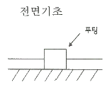
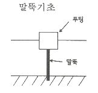
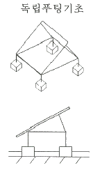
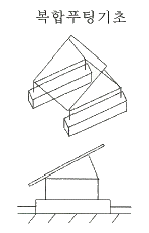
(정답률: 55%)
27. 태양광발전 어레이 가대를 아래와 같이 설계하고자 한다. 설계 순서를 옳게 나열한 것은?
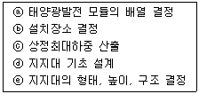
- ⓐ → ⓒ → ⓔ → ⓑ → ⓓ
- ⓑ → ⓐ → ⓔ → ⓒ → ⓓ
- ⓐ → ⓓ → ⓒ → ⓔ → ⓑ
- ⓑ → ⓒ → ⓐ → ⓔ → ⓓ
(정답률: 68%)
28. 평지붕에 태양광발전시스템 설치를 위한 설계 검토 시, 평지붕의 적설하중 관계식에 사용되지 않는 인자는?
- 노출계수
- 온도계수
- 지붕면 외압계수
- 지상적설하중의 기본값
(정답률: 48%)
29. 태양광발전시스템의 출력 18750W, 태양광발전 모듈의 최대출력 250W, 모듈의 직렬연결 개수가 5개일 때 최대 병렬연결 개수는?
- 10
- 15
- 20
- 25
(정답률: 77%)
30. 태양광 발전원가의 구성 항목 중 초기투자비로 보기 어려운 것은?
- 계통연계비용
- 인허가 용역비
- 설계 및 감리비
- 운전유지 및 수선비
(정답률: 75%)
31. 전기실에 설치하는 소화설비로 적합하지 않은 것은?
- 이너젠 소화설비
- 하론가스 소화설비
- 스프링클러 소화설비
- 이산화탄소 소화설비
(정답률: 80%)
32. 가교 폴리에틸렌 절연 비늘 시스 케이브을 나타내는 약호는?
- DV
- GV
- CV
- OV
(정답률: 76%)
33. 태양과발전용 인버터의 입력한계전압이 800 Vdc 라면, 이때 적합한 태양광발전 모듈의 최대 직렬 수는? (단, 모듈 온도변화는 –10℃ ~ 70℃로 하고, 기타 조건은 표준상태이다.)
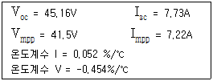
- 14직렬
- 15직렬
- 16직렬
- 17직렬
(정답률: 41%)
34. 태양광발전 부지의 연간 경사면 일사량이 4784 MJ/m2 이고 효율이 81% 일 때 일평균 발전시간은 약 몇 h/day 인가?
- 1.328
- 2.947
- 3.638
- 4.784
(정답률: 39%)
35. 부지선정 검토 시 법적 인허가 및 신고사항에 포함되지 않는 것은?
- 공작물 축조신고
- 문화재 지표조사
- 무연분묘 개장허가
- 공급인증서 발급허가
(정답률: 65%)
36. 태양광발전시스템의 감시(Monitoring)설비에 대한 설명으로 틀린 것은? (단, 분산형전원 배전계통 연계 기술기준 및 신·재생에너지 설비의 지원 등에 관한 지침 등에 따른다.)
- 기상상태를 파악하기 위해 풍향 및 풍속계, 온도계, 습도계를 설치한다.
- 일사량을 측정하기 위해 경사면 일사랑계, 수평면 일사랑계를 설치한다.
- 250 kW 이상 발전설비의 연계점에 전력품질 감시설비를 설치해야 한다.
- 20 kW 이상 발전설비에는 운전상황을 알 수 있는 모니터링 설비를 설치해야 한다.
(정답률: 58%)
37. 일조율에 관한 설명으로 옳은 것은?
- 가조시간에 대한 일조시간의 비
- 해뜨는 시간부터 해지는 시간까지의 일사량
- 구름의 방해 없이 지표면에 태양이 비친 시간
- 지표면에 직접 도달하는 직달 일조강도의 적산
(정답률: 64%)
38. 모듈에서 접속함까지의 직류 배선길이가 30m 이며, 어레이 전압이 300V, 전류가 5A 일 때, 전압강하는 몇 V 인가? (단, 전선의 단면적은 4.0 mm2 이다.)
- 1.335
- 1.425
- 1.787
- 1.925
(정답률: 50%)
39. 어레이의 세로길이를 3.6m, 어레이의 경사각을 33°, 그림자 고도각을 15°로 산정하여 북위 37° 지방에서 태양광발전시스템을 건설하고자 할 때 어레이 간 최소 이격거리는 약 몇 m 인가?
- 9.6
- 10.3
- 11.3
- 13.6
(정답률: 48%)
40. 토목 도면에서 밭을 나타내는 기호는?
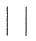
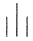
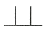
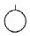
(정답률: 73%)
3과목: 임의 구분
41. 전기설비기술기준의 판단기준에 따라 옥내에 시설하는 저압용 배·분전반 등의 시설방법으로 틀린 것은?
- 한 개의 분전반에는 한 가지 전원(1회선의 간선)만 공급하여야 한다.
- 배·분전반 안에 물이 스며들이 고이지 아니하도록 한 구졸 하여야 한다.
- 옥내에 설치하는 배전반 및 분전반은 불연성 또는 난연성이 있도록 시설하도록 한다.
- 노출된 충전부가 있는 배전반 및 분전반은 취급자 이외의 사람이 쉽게 출입할 수 없도록 설치하여야 한다.
(정답률: 41%)
42. 굵기가 다른 케이블을 배선할 경우 전선관의 두께는 전선의 피부 절연물을 포함한 단면적이 전선관의 내 단면적의 최대 몇 % 이하가 되어야 하는가?
- 20
- 32
- 48
- 52
(정답률: 61%)
43. 전력계통에서 3권선 변압기(Y-Y-△)를 사용하는 주된 이유는?
- 승압용
- 노이즈 제거
- 제3고조파 제거
- 2가지 용량 사용
(정답률: 75%)
44. 태양광발전시스템이 설치된 고층 건물에 적용하는 방법으로 뇌격거리를 반지름으로 하는 가상 구를 대지와 수뢰부가 동시에 접하도록 회전시켜 보호범위를 정하는 피뢰방식은 무엇인가?
- 메시법
- 돌침 방식
- 회전구체법
- 수평도체 방식
(정답률: 73%)
45. 태양광발전시스템의 접지공사 시설방법에 대한 설명으로 틀린 것은?
- 부득이한 상황을 제외하고는 접지선은 녹색으로 표시해야 한다.
- 태양광발전 어레이에서 인버터까지의 직류전로는 원칙적으로 접지공사를 실시해야 한다.
- 접지선이 외상을 받을 우려가 있는 경우에는 합성수지관 또는 금속관에 넣어 보호하도록 한다.
- 태양광발전 모듈의 접지는 1개 모듈을 해체하더라도 전기적 연속성이 유지되도록 하여야 한다.
(정답률: 46%)
46. 다른 개폐기기와 비교하여 전력퓨즈의 특징으로 틀린 것은?
- 고속도 차단된다.
- 과전류에 용단되기 어렵다.
- 차단 능력이 크며, 재투입은 불가능하다.
- 동작시간-전류특성을 계전기처럼 자유롭게 조절할 수 없다.
(정답률: 60%)
47. 전력시설물 공사감리업무 수행지침에 따른 감리용역 계약문서가 아닌 것은?
- 설계도서
- 과업지시서
- 감리비 산출내역서
- 기술용역입찰유의서
(정답률: 43%)
48. 태양광발전시스템 설치공사에 대한 일반적인 절차이다. 가, 나, 다, 라에 들어갈 내용으로 옳은 것은?
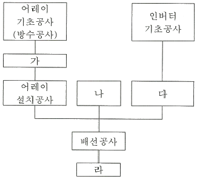
- 가. 어레이용지지대공사, 나. 인버터설치공사, 다. 접속함 설치, 라. 점검 및 검사
- 가. 어레이용지지대공사, 나. 접속함설치, 다. 인버터설치공사, 라. 점검 및 검사
- 가. 어레이용지지대공사, 나. 접속함 설치, 다. 점검 및 검사, 라. 인버터설치공사
- 가. 어레이용지지대공사, 나. 점검 및 검사, 다. 인버터설치공사, 라. 접속함 설치
(정답률: 72%)
49. 케이블 등이 방화구획을 관통할 경우 관통부분에 되메우기 충전재 등을 사용하여 관통부 처리를 하여야 한다. 방화구획 관통부 처리 목적이 아닌 것은?
- 화열의 제한
- 연기 확산방지
- 인명 안전대피
- 전선의 절연강도 향상
(정답률: 66%)
50. 태양광발전 어레이의 출력전압이 400V를 넘는 경우 제 몇 종 접지공사를 하여야 하는가?
- 제1종 접지공사
- 제2종 접지공사
- 제3종 접지공사
- 특별 제3종 접지공사
(정답률: 55%)
51. 금속제 케이블트레이의 종류 중 길이 방향의 양 옆면 레일을 각각의 가로 방향 부재로 연결한 조립 금속구조인 것은?
- 사다리형
- 통풍 채널형
- 바닥 밀폐형
- 바닥 통풍형
(정답률: 70%)
52. 전력시설물 공사감리업무 수행지침에 따라 감리원은 시공된 공사가 품질확보 미흡 또는 중대한 위해를 발생시킬 수 있다고 판단되거나, 안전상 중대한 위험이 발생된 경우 공사 중지를 지시할 수 있는데, 다음 중 전면중지에 해당하는 것은?
- 동일 공정에 있어 3회 이상 시정지시가 이행되지 않을 때
- 안전 시공상 중대한 위험이 예상되어 물적, 인적 중대한 피해가 예건될 때
- 공사업자가 공사의 부실 발생 우려가 짙은 상황에서 적절한 조치를 취하지 않은 채 공사를 계속 진행할 때
- 재시공 지시가 이행되지 않는 상태에서는 다음 단계의 공정이 진행됨으로써 하자발생이 될 수 있다고 판단될 때
(정답률: 45%)
53. 신·재생에너지 설비의 지원 등에 관한 지침에 따른 태양광발전 모듈의 시공 기준으로 틀린 것은?
- 태양광발전 모듈은 인증 받은 제품을 설치하여야 한다.
- 전선, 피뢰침, 안테나 등 경미한 음영은 장애물로 보지 않는다.
- 사업계힉서 상의 모듈 설계용량과 동일하게 설치할 수 없을 경우에는 설계용량의 1⑤%를 넘지 말아야 한다.
- 모듈의 일조면을 정남향으로 설치가 불가능할 경우에 한하여 정남향을 기준으로 동쪽 또는 서쪽 방향으로 45도 이내에 설치하여야 한다.
(정답률: 58%)
54. 보호계전시스템의 구성 요소 중 검출부에 해당되지 않는 것은?
- 릴레이
- 영상변류기
- 계기용변류기
- 계기용변압기
(정답률: 70%)
55. 전력시설물 공사감리업무 수행지침에 의해 감리원은 공사업자로부터 시공상세도를 사전에 제출받아 검토·확인하여 승인 한 후 시공할 수 있도록 하여야 한다. 제출 받은 날로부터 최대 며칠 이내에 승인하여야 하는가?
- 3일
- 5일
- 7일
- 14일
(정답률: 66%)
56. 전기설비기술기준의 판단기준 제118조 버스덕트 공사의 시설방법으로 틀린 것은?
- 덕트(환기형의 것을 제외한다)의 끝부분은 막을 것
- 덕트 상호 간 및 전선 상호 간은 견고하고 또는 전기적으로 완전하게 접속할 것
- 도체는 단면적 20mm2 이상의 띠 모양, 지름 5mm 이상의 관모양이나 둥글고 긴 막대 모양의 동 또는 단면적 30mm2 이상의 띠 모양의 알루미늄을 사용한 것일 것
- 덕트를 조영재에 붙이는 경우에는 덕트의 지지점 간의 거리를 5m(취급자 이외의 자가 출입할 수 없도록 설비한 곳에서 수직으로 붙이는 경우에는 10m) 이하로 하고 또한 견고하게 붙일 것
(정답률: 56%)
57. 태양광발전 모듈 간 직·병렬배선 방법으로 틀린 것은?
- 배선 접속부위는 빗물 등이 유입되지 않돌고 자기 융착 절연테이프와 보호테이프로 감는다.
- 모듈 뒷면에는 접속용 케이블일 2개씩 나와 있으므로 반드시 극성(+, -) 표시를 확인한 후 결선한다.
- 태양광발전 모듈 간의 배선은 동작전류에 충분히 견딜 수 있도록 단면적 1.5mm2 이상의 케이블을 사용한다.
- 1대의 인버터에 연결된 태양광발전 모듈의 직렬군이 2병렬 이상일 경우에는 각 직렬군의 출력전압이 동일하게 형성되돌고 배열한다.
(정답률: 68%)
58. 회로를 차단할 때 발생하는 아크를 진공 중으로 급속히 확산하는 것을 이용하는 진공차단기의 특징이 아닌 것은?
- 높은 압력의 공기가 발생하므로 소음이 크다.
- 전류 재단현상이 발생하므로 개폐서지가 크다.
- 접점의 소모가 적으므로 차단기의 수명이 길다.
- 소형 경량으로 실내 큐비클에 설치가 가능하다.
(정답률: 57%)
59. 전력시설물 공사감리업무 수행지침에 따라 태양광발전시스템의 준공검사 후 현장문서 인수인계 사항이 아닌 것은?
- 준공사진첩
- 시공계획서
- 시설물 인수·인계서
- 품질시험 및 검사성과 총괄표
(정답률: 65%)
60. 설계감리업무 수행지침에 따른 설계 감리원의 수행 업무범위에 포함되지 않는 것은?
- 설계감리 용역을 발주
- 시공성 및 유지관리의 용이성 검토
- 주요 설계용역 업무에 대한 기술자문
- 설계업무의 공정 및 기성관리의 검토·확인
(정답률: 63%)
4과목: 임의 구분
61. 태양광발전시스템의 운영 시 안전 및 유의사항으로 틀린 것은?
- 태양광발전 어레이의 표면을 청소할 필요는 없다.
- 접속함 출력측 전압은 안정된 일사 강도가 얻어질 때 실시한다.
- 태양광발전 모듈은 비오는 날에도 미소한 전압을 발생하고 있으므로 주의해서 측정해야 한다.
- 측정 시각은 일사강도, 온도의 변동을 극히 적게 하기 위해 맑을 때, 태양이 남쪽에 있을 때의 전후 1시간에 실시하는 것이 바람직하다.
(정답률: 74%)
62. 태양광발전 모니터링 프로그램의 기능이 아닌 것은?
- 데이터 수집 기능
- 데이터 분석 기능
- 데이터 예측 기능
- 데이터 통계 기능
(정답률: 73%)
63. 태양광발전시스템 작업 중 감전방지책으로 틀린 것은?
- 강우 시에는 작업을 중단한다.
- 절연 처리된 공구들을 사용한다.
- 저압선로용 절연장갑을 착용한다.
- 작업 전 태양광발전 모듈 표면을 외부로 노출한다.
(정답률: 80%)
64. 태양광발전용 인버터에 'Solar Cell UV fault'라고 표시 되었을 경우 현상 설명으로 옳은 것은?
- 계통 전압이 규정 초과일 때 발생
- 계통 전압이 규정 이하일 때 발생
- 태양전지 전압이 규정 초과일 때 발생
- 태양전지 전압이 규정 이하일 때 발생
(정답률: 57%)
65. 태양광발전시스템의 사용전압이 저압인 전로에서 정전이 어려운 경우 등 절연저항 측정이 곤란한 경우에는 누설전류를 최대 몇 mA 이하로 유지하여야 하는가?
- 0.5
- 1
- 2
- 4
(정답률: 48%)
66. 태양광발전시스템 정기점검에 대한 설명으로 틀린 것은?
- 점검·시험은 원칙적으로 지상에서 실시한다.
- 100 kW 이상의 경우에는 매월 1회 이상 점검하여야 한다.
- 100 kW 미만의 경우에는 매년 2회 이상 점검하여야 한다.
- 3 kW 미만의 태양광발전시스템은 법적으로는 정기점검을 하지 않아도 된다.
(정답률: 35%)
67. 태양광발전시스템 운전특성의 측정방법(KS C 8535:20⑤)에서 축전지의 측정항목으로 틀린 것은?
- 단자전압
- 충전전류
- 충전전력량
- 역조류전류
(정답률: 67%)
68. 정기점검에서 인버터의 측정 및 시험 항목에 해당하지 않은 것은?
- 절연저항
- 통풍확인
- 표시부 동작 확인
- 투입저지 시한 타이머 동작시험
(정답률: 50%)
69. 구역전기사업의 허가를 신청하는 경우 허가신청서와 함께 첨부되는 서류의 종류로 틀린 것은?
- 송전관계일람도
- 발전원가명세서
- 특정한 공급구역의 경계를 명시한 3만분의 1 지형도
- 「전기사업버 시행규칙」별표 1의 작성요령에 따라 작성한 사업계획서
(정답률: 56%)
70. 결정질 실리콘 태양광발전 모듈(성능)(KS C 8561:2018)에서 외관검사 시 품질기준으로 틀린 것은?
- 최대 출력이 시험 전 갑의 95% 이상 일 것
- 모듈외관에 크랙, 구부러짐, 갈라짐 등이 없는 것
- 태양전지 간 접속 및 다른 접속부분에 결함이 없는 것
- 태양전지와 태양전지, 태양전지와 프레임의 접촉이 없는 것
(정답률: 67%)
71. 배전반 외부에서 이상한 소리, 냄새, 손상 등을 점검항목에 따라 점검하여, 이상 상태 발견 시 배전반 문을 열고 이상 정도를 확인하는 점검은?
- 특별점검
- 정기점검
- 일상점검
- 사용전점검
(정답률: 71%)
72. 태양광발전시스템을 운영하기 위하여 필요한 계측장비로 틀린 것은?
- IV checker
- 열화상카메라
- 폐쇄력 측정기
- 솔라 경로추적기
(정답률: 57%)
73. 태양광발전시스템의 전선에서 발생하는 고장으로 틀린 것은?
- 변색
- 경화
- 소음
- 표면 크랙
(정답률: 62%)
74. 태양광발전시스템의 성능평가를 위한 사이트 평가방법이 아닌 것은?
- 설치 용량
- 설치 대상기관
- 설치 가격 경제성
- 설치 시설의 지역
(정답률: 34%)
75. 태양광발전 어레이의 개방전압 측정의 목적이 아닌 것은?
- 직렬 접속선의 미결선 검출
- 인버터의 오동작 여부 검출
- 동작 불량의 태양광발전 모듈 검출
- 태양광발전 모듈의 잘못 연결된 극성 검출
(정답률: 56%)
76. 태양광발전시스템 보호계전기의 점검내용으로 틀린 것은?
- 단자부의 볼트 이완 여부
- 붓싱 단자부의 변색 여부
- 이물질, 먼지 등의 접착 여부
- 접점의 접촉상태의 양호 여부
(정답률: 56%)
77. 태양광발전시스템의 계측에서 관리하여야 할 데이터 항목으로 틀린 것은?
- 조도
- 대기온도
- 일일 발전량
- 수평면 또는 경사면 일사량
(정답률: 60%)
78. 태양광발전시스템에서 유지보수 전의 안전조치로 틀린 것은?
- 검전기로 무전압 상태를 확인한다.
- 잔류전하를 방전시키고 접지시킨다.
- 차단기 앞에 “점검중” 표지판을 설치한다.
- 해당 단로기를 닫고 주회로가 무전아이 되게 한다.
(정답률: 65%)
79. 태양광발전(PV) 모듈(안전)(KS C 8563:2015)에서 플라스틱 등 특정한 용도로 적용할 때 그 사용 용도의 적합성 여부를 미리 예측할 수 있도록 플라스틱 가연성을 시험하는 장치는?
- IP 시험기
- 난연성 시험기
- 트래킹 시험기
- 접근성 시험기
(정답률: 64%)
80. 태양광발전용 납축전지의 잔존 용량 측정 방법(KS C 8532:1995)에서 측정주기는 몇 분 이하로 하는가? (단, 보정의 목적으로 사용하는 경우는 제외)
- 10
- 20
- 30
- 60
(정답률: 48%)
5과목: 임의 구분
81. 전기사업법에 의거하여 전기사업자가 전기품질을 유지하기 위하여 지켜야 하는 표준전압, 표준주파수와 허용오차에 관한 설명으로 틀린 것은?
- 표준전압 110볼트의 상하로 6볼트 이내
- 표준전압 220볼트의 상하로 13볼트 이내
- 표준전압 380볼트의 상하로 20볼트 이내
- 표준주파수 60헤르츠 상하로 0.2헤르츠 이내
(정답률: 66%)
82. 전기사업법에서 사용하는 용어 중 발전사업·송전사업·배전사업·전기판매사업 및 구역전기사업을 말하는 것은?
- 전기사업
- 전력시장
- 전기설비
- 보편적 공급
(정답률: 72%)
83. 전기설비기술기준의 판단기준에 따라 분산형전원을 인버터를 이용하여 배전사업자의 저압 전력계통에 연계하는 경우 인버터로부터 직류가 계통으로 유출되는 것을 방지하기 위하여 접속점(접속설비와 분산형전원 설치자측 전기설비의 접속점을 말한다.)과 인버터 사이에 설치하는 것은? (단, 단권변압기를 제외한다.)
- 차단기
- 전동기
- 보호계전기
- 상용주파수 변압기
(정답률: 58%)
84. 신에너지 및 재생에너지 개발·이용·보그 촉진법에 따른 신·재생에너지 설치의무화 제도에 대한 설명으로 틀린 것은?
- 학교시설은 대상에 포함된다.
- 2019년도 공급의무 비율은 27% 이다.
- 공급의무 비율 용량산정 기준은 건축비이다.
- 대상 건축물의 신축·증축 또는 개축하는 부분의 연면적 기준은 1000m2 이상이다.
(정답률: 54%)
85. 신에너지 및 재생에너지 개발·이용·보급 촉진법에 의거하여 신·재생에너지 공급인증서의 거래 제한 사유가 되지 않는 것은?
- 공급인증서가 발전소별로 5000kW 이내의 수력을 이용하여 에너지를 공급하고 발급된 경우
- 공급인증서가 기존 방조제를 활용하여 건설된 조력(潮力)을 이용하여 에너지를 공급하고 발급된 경우
- 공급인증서가 석타을 액화·가스화한 에너지 또 중질잔사유를 가스화한 에너지를 이용하여 에너지를 공급하고 발급된 경우
- 공급인증서가 폐기물에너지 중 화석연료에서 부수적으로 발생하는 폐가스로부터 얻어지는 에너지를 이용하여 에너지를 공급하고 발급된 경우
(정답률: 45%)
86. 저탄소 녹색성장 기본법에 따르 다음 ( )에 들어갈 내용으로 옳은 것은?
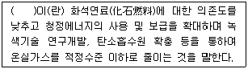
- 저탄소
- 녹색성장
- 녹색기술
- 녹색산업
(정답률: 52%)
87. 전기사업법에 따라 구역전기사업자가 특정한 공급구역의 열 수요가 감소함에 따라 발전기 가동을 단축하는 경우 생산한 전력으로는 해당 특정한 공급구역의 수요에 부족한 전력을 전력시장에서 거래할 수 있도록 산업통상자원부령으로 정하는 기간으로 옳은 것은? (단, 지역냉난방사업을 하는 자로서 15만킬로와트 이하의 발전설비용량을 갖춘 자에 한 한다.)
- 매년 1월 1일부터 6월 30일까지
- 매년 7월 1일부터 8월 31일까지
- 매년 3월 1일부터 11월 30일까지
- 매년 4월 1일부터 12월 31일까지
(정답률: 56%)
88. 저탄소 녹색성장 기본법의 목적으로 이 법 제1조에서 언급하고 있지 않는 것은?
- 온실가스 배출 증가
- 국민경제의 발전을 도모
- 녹색성장에 필요한 기본조성
- 경제와 환경의 조화로운 발전
(정답률: 70%)
89. 전기설비기술기준의 판단기준에 따라 사용전압 35kW 이하의 특고압 가공전선이 도로를 횡단하는 경우 지표상 높이는 최소 몇 m 이상이어야 하는가?
- 5
- 5.5
- 6
- 6.5
(정답률: 61%)
90. 다음 보기 중 전기공사업법에 의거하여 전기공사를 도급받은 수급인이 다른 공사업자에게 하도급 줄 수 있는 경우는?
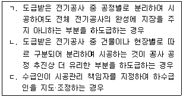
- ㄱ, ㄴ
- ㄱ, ㄷ
- ㄴ, ㄷ
- ㄱ, ㄴ, ㄷ
(정답률: 42%)
91. 전기설비기술기준의 판단기준에 따라 다음 ( )의 ㉠, ㉡에 들어갈 내용으로 옳은 것은?
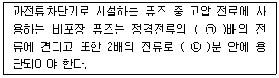
- 1.25배, 2분
- 1.5배, 3분
- 2배, 4분
- 2.5배, 6분
(정답률: 60%)
92. 신에너지 및 재생에너지 개발·이용·보급 촉진법에 따라 산업통상자원부장관은 공용화 품목의 개발, 제조 및 수요·공급 조절에 필요한 자금의 몇 % 까지 중소기업자에게 융자할 수 있는가?
- 20
- 40
- 60
- 80
(정답률: 57%)
93. 신에너지 및 재생에너지 개발·이용·보급 촉진법에 따라 신·재생에너지 기술개발 및 이용·보급을 촉진하기 위한 기본계획은 몇 년마다 수립하여야 하는가?
- 2년
- 3년
- 5년
- 10년
(정답률: 49%)
94. 신에너지 및 재생에너지 개발·이용·보급 촉진법에 따른 신·재생에너지 정책심의회 심의 내용이 아닌 것은?
- 기본계획의 수립 및 변경에 관한 사항
- 신·재생에너지 분야 전문 인력 양성계획에 관한 사항
- 신·재생에너지 기술개발 및 이용·보급에 관한 중요 사항
- 신·재생에너지 발전에 의하여 공급되는 전기의 기준가격 및 그 변경에 관한 사항
(정답률: 40%)
95. 전기설비기술기준에서 저압전선로 중 절연부분의 전선과 대지 사이 및 전선의 심선 상호 간의 절연저항은 사용전압에 대한 누설전류가 최대 공급전류의 얼마를 넘지 않돌고 하여야 하는가?
- 1/1414
- 1/1732
- 1/2000
- 1/3000
(정답률: 64%)
96. 전기사업법에서 정의하는 전기설비에 포함되지 않는 것은?
- 송전설비
- 배전설비
- 전기사용을 위하여 설치하는 기계·기구
- 댐건설 및 주변지역자원 등에 관한 법률에 따라 건설되는 댐
(정답률: 67%)
97. 저탄소 녹색성장 기본법에 따라 녹색성장위원회의 구성으로 옳은 것은?
- 위원장 1명을 포함한 30명 이내의 위원으로 구성
- 위원장 1명을 포함한 50명 이내의 위원으로 구성
- 위원장 2명을 포함한 30명 이내의 위원으로 구성
- 위원장 2명을 포함한 50명 이내의 위원으로 구성
(정답률: 42%)
98. 전기설비기술기준의 판단기준에 따른 전로의 중성점을 접지하는 목적에 해당되지 않는 것은?
- 이상 전압의 억제
- 대지 전압의 저하
- 보호 장치의 확실한 동작의 확보
- 부하 전류의 일부를 대지로 흐르게 함으로써 전선을 절약
(정답률: 68%)
99. 전기설비기술기준의 판단기술에 따라 전선을 접속하는 경우 전선의 세기를 최대 몇 % 이상 감소시키지 않아야 하는가?
- 10
- 20
- 30
- 40
(정답률: 66%)
100. 전기사업법에 따른 전기위원회 위원의 자격이 되지 않는 사람은?
- 변호사로서 10년 이상 있거나 있었던 사람
- 5급 이상의 공무원으로 있거나 있었던 사람
- 전기 관련 기업에서 15년 이상 종사한 경력이 있는 사람
- 소비자보호 관련 단체에서 10년 이상 종사한 경력이 있는 사람
(정답률: 55%)